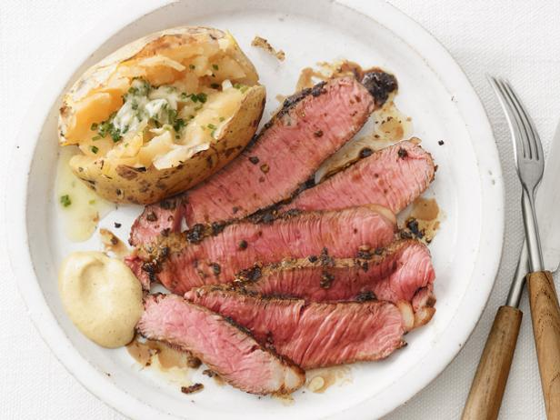

Sous Vide Steak Dinner

Description
Restaurant-quality eating, at home, for a fraction of the cost.
Ingredients
- New York Strip Steak
- One whole clove of garlic
- Baked Potato
- 1 tbsp Olive Oil
- 2 tbsp Butter (One per item)
- Potato fixin's
- A coarse salt like kosher or sea salt
Steps (Steak)
- Set your sous vide to the appropriate temperature based on your preference for donenness:
- Rare: 120°F to 128°F
- Medium-rare: 129°F to 134°F
- Medium: 135°F to 144°F
- Medium-well: 145°F to 155°F
- Well done: 156°F and above
- Set your pad of butter out to soften to room temperature.
- Give your steak an appropriate rub. I'm happy with salt, pepper, and a little garlic powder.
- Set your clove of garlic into the surface of the steak with gentle pressure before following the next step.
- Vacuum-seal your steak using
- A vacuum sealer
or
- A BPA-free zip-locking freezer bag via the 'submersion' technique.
- Cook for between one and two-and-a-half hours. Note: do not cook for less than one hour! Do not cook from frozen!
- Once your timer is up, remove the bag and place it in the freezer for around ten minutes, or the refrigerator for as long as 15 minutes. This cooling-down of the outside of the steak will prevent over-cooking the inside during the searing step, which comes next.
- Get a cast-iron skillet as hot as you possibly can. It can help to cook it in the stove at the stove's highest temperature before removing it and transferring it to a stovetop. Cooking on an outdoor grill would do very well here too.
- Once you've chilled the steak for the appropriate length of time, remove it from the refrigerator / freezer and open the bag. Remove the clove of garlic, then transfer directly to the cast-iron skillet.
- Sear for roughly one minute on one side.
- Using a set of tongs, hold the steak sideways and sear (a little downard pressure would not hurt!) on the rind to render out further fat.
- Flip to the final side of the steak, and place the tablespoon of butter atop it. Let that melt over the steak for 60-90 seconds and remove to a plate for serving.
Steps (Potato)
- Around 40 minutes from the end of your sous vide timer, pre-heat your oven to 375°F or even 400°F
- Using a fork, perforate your potato all over with small punctures to vent. Venting prevents explo-si-on.
- Rinse potato, then, rub all over with olive oil.
- Sprinkle coarse salt all over potato (the olive oil will help it adhere)
- Set a tin foil-covered baking pan on the lower rack of your oven. The pan will catch any falling oil, and the tin foil will allow for easy clean-up.
- At around 30 minutes from the end of your sous vide's timer, place the potato directly on the top oven rack.
- Cook your potato for 50 minutes.
- The potato should come out right around the time you are done searing your steak.
- For an extra professional appearance, follow these steps:
- Put a 1-2" cut in the top of your potato, right down the middle.
- Lick your forefinger and thumb tips on both hands (coating them reduces the likelihood of burning yourself)
- Quickly grab the potato at the 'corners' around the slit you cut, and push down about a quarter- or half-inch. Immediately remove your fingers so as not to burn yourself! This is a quick motion!
- Pressing around the slit will cause it to open, and the pillowy contents within to burst upward, ready to receive a pad of butter, and any further potato fixin's you wish to deposit there.
- Add to plate with steak and serve!